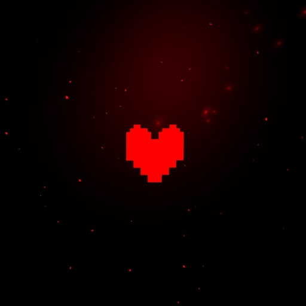

By Toby Fox

Undertale é um RPG 2D desenvolvido por Toby Fox, lançado em 2015. O jogador controla uma criança que cai no Subterrâneo, uma região isolada
habitada por monstros. O objetivo é encontrar uma saída para a superfície.
O jogo possui um sistema de combate híbrido:
turnos com elementos de bullet hell e a opção de derrotar ou poupar inimigos. As decisões do jogador afetam diretamente o enredo,
levando a múltiplos finais (Pacifista, Neutro e Genocida).
A estética é minimalista, com gráficos em pixel art e
trilha sonora original. O jogo enfatiza narrativa ramificada, moralidade e
consequências das escolhas tomadas pelo jogador.

Personagens
Rotas
Site Oficial